Генераторы тактовых импульсов
В электронике часто встречаются устройства, работа которых заключается в подаче электрического сигнала через определенные промежутки времени (такты). Эти устройства называются тактовыми генераторами или генераторами тактовых имтульсов. В Майнкрафте можно построить редстоун-схемы, выполняющие похожую функцию. Эти схемы известны как "тик-так механизмы". На данной странице представлены простые "тик-так механизмы" 2-х типов: генераторы с управляемой задержкой и быстрые генераторы. А также несколько схем генераторов более сложной конструкции.
Генераторы с управляемой задержкой
Генераторы с управляемой задержкой, как правило, создаются на основе повторителей. Повторитель ― это редстоун-элемент, который демонстрирует задержку при пропускании редстоун-сигнала через себя. Есть 4 уровня задержки повторителя:
- Уровень "0". Если просто поставить повторитель в редстоун-схему и больше никак с ним не взаимодействовать, то он будет иметь задержку в десятую долю секунды (0,1 с). Это можно считать задержкой "по умолчанию".
- Уровень "1". Если с помощью ПКМ 1 раз нажать на повторитель с уровнем задержки "0", то он получит задержку 1-го уровня, которая составляет 0,2 с.
- Уровень "2". При Использовании ПКМ на повторителе с задержкой 1-го уровня, то уровень повысится до 2-го, а задержка станет равна 0,3 с.
- Уровень "3". По аналогии с предыдущим уровнем, если нажать ПКМ на повторитель снова, то уровень повысится до 3-го, а задержка ― до 0,4 с. Если нажать еще раз, то задержка сбросится до уровня "0".
Внешний вид повторителей с разными уровнями задержки:
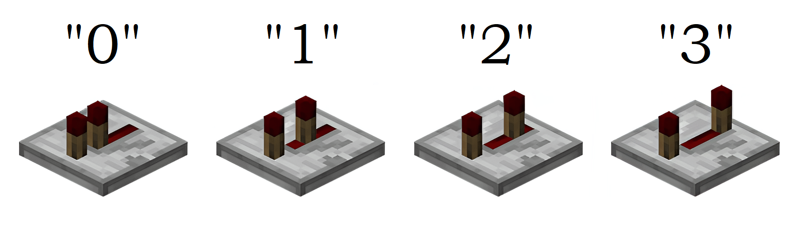
Генераторы с управляемой задержкой в разных состояниях:
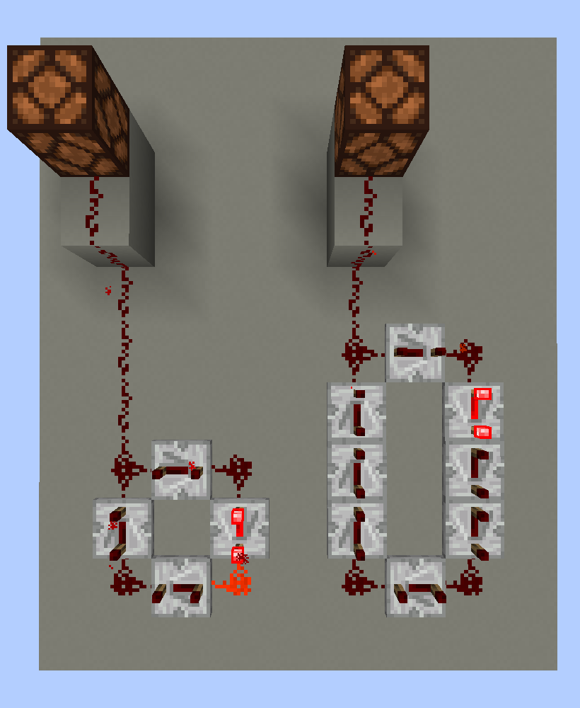
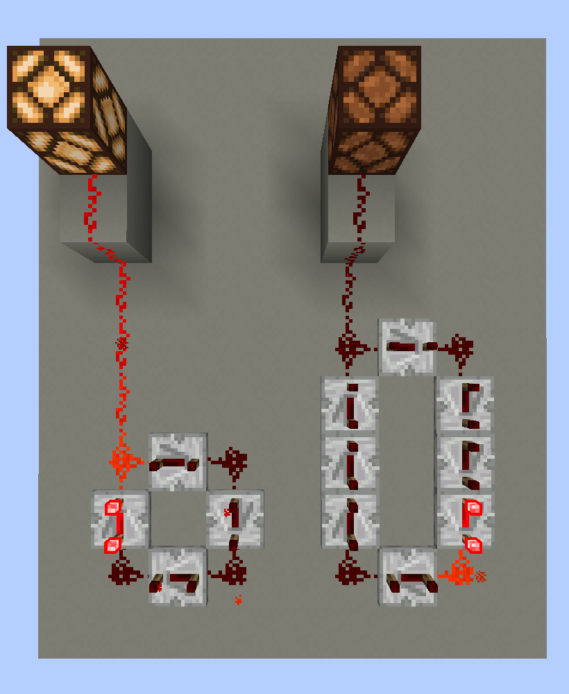
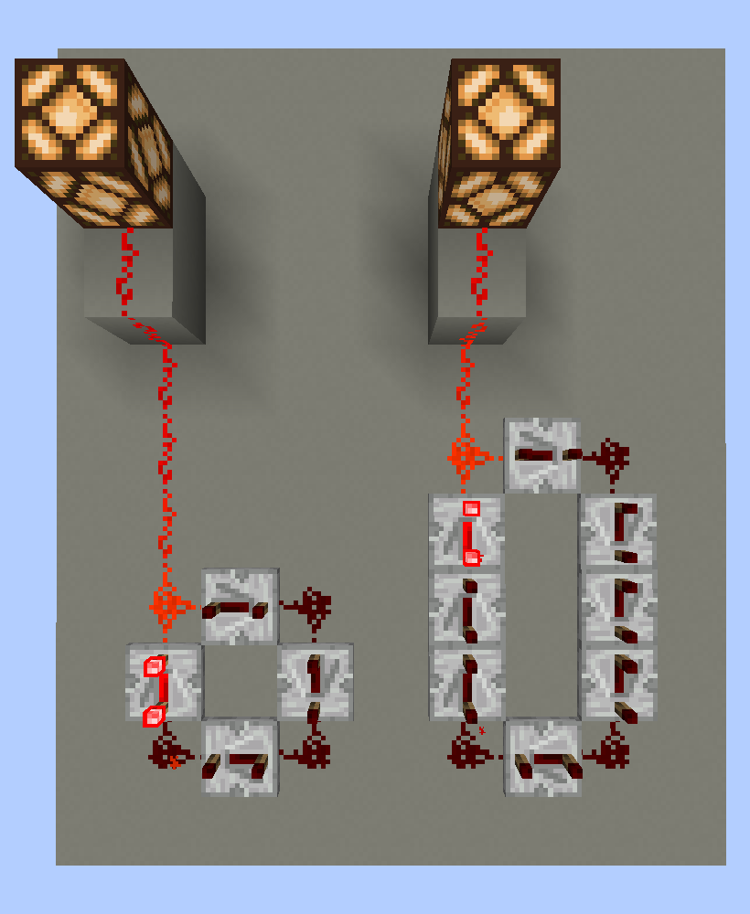
Левый генератор состоит из 4 повторителей (с максимальной задержкой), правый ― из 8 (также с максимальной задержкой). Период сигнала, подаваемого 1-м генератором, равен 1,6 с; период 2-го генератора ― 3,2 с.
Быстрые генераторы
Я назвал эти генераторы "быстрыми", т. к. периоды их сигналов не превышают 1 с. В схемах использованы медные лампы, т. к. обычные редстоуновые лампы не успевают реагировать на такие короткие импульсы.
Быстрые генераторы в разных состояниях:
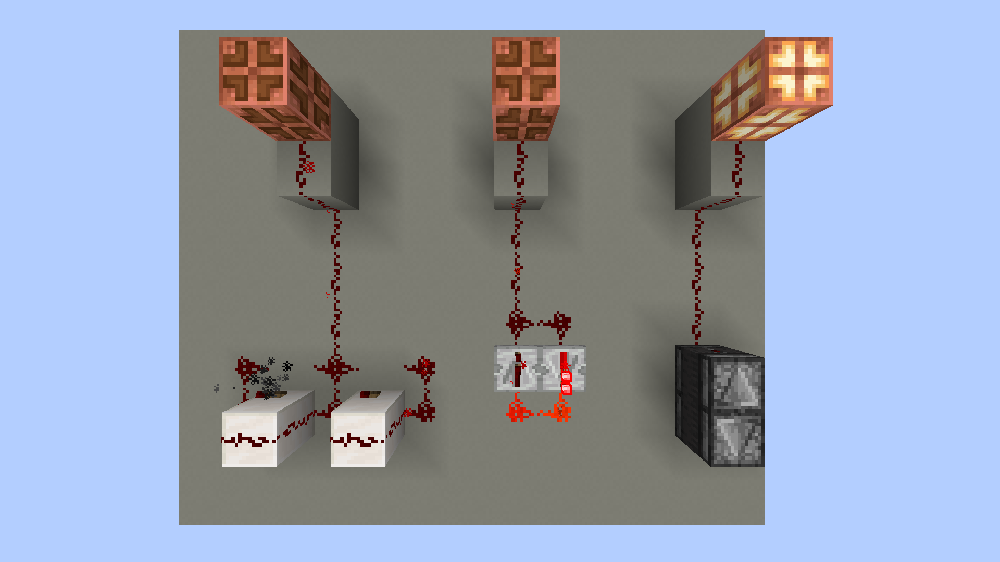
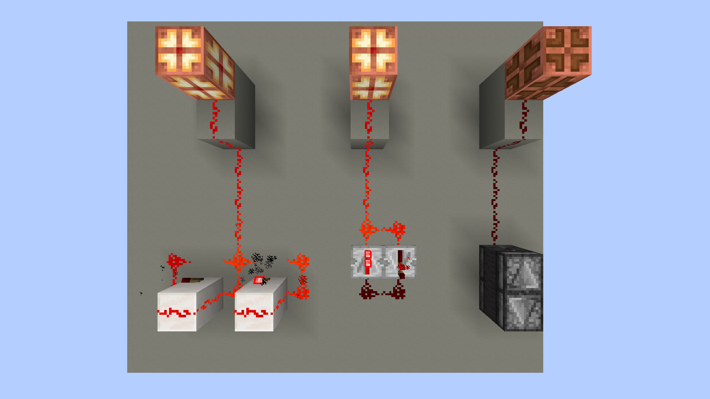
Левый генератор состоит из 2 редстоуновых факелов, которые посылают сигналы в те блоки, на которых находятся. Если в блок, на котором установлен редстоуновый факел, подается сигнал, то факел гаснет. Как только факелы гаснут, сигналы перестают подаваться в блоки. Факелы снова загораются, и все начинается с начала. Важно: подобная схема должна содержать не менне 2 факелов. Схема с 1 факелом через несколько секунд переходит в нестабильное состояние, в котором сигнал не подается в блок с факелом, но сам факел при этом не горит.
Центральный генератор построен из 2 повторителей с задержкой уровня "0". Период сигнала составляет 0,2 с (длительность импульса ― 0,1 с; время между импульсами ― 0,1 с; 0,1+0,1=0,2).
Правый генератор ― это 2 наблюдателя, "смотрящие" навстречу друг другу. Наблюдатель ― это блок, реагиирующий на изменение состояния того блока на который он "смотрит". Его можно назвать внутриигровым датчиком. Реакция наблюдателя заключается в кратковременной подаче редстоун-сигнала. При подаче сигнала наблюдатель переходит в активное состояние, но почти сразу возвращается в неактивное. 2-й наблюдатель успевает "заметить" что 1-й наблюдатель изменил свое состояние и тоже подает сигнал, вызывая соответствующую реакцию 1-го наблюдателя ― цикл запущен.
Еще несколько "тик-так механизмов":
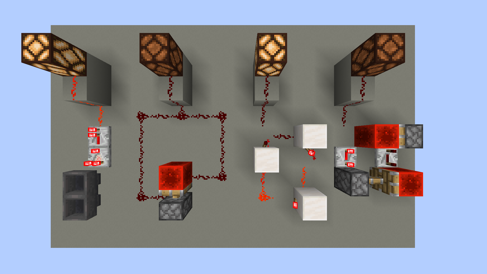
1-й генератор содержит 2 воронки, соединенные друг с другом, и компаратор. Компаратор ― это блок, специально созданный для продвинутых редстоун-схем. Вдаваться в подробности его функционирования сейчас не будем ― это желательно описывать в отдельном гайде. В контексте данного генератора достаточно знать, что компаратор может реагировать на появление какого-л. предмета в каком-л. "хранилище" для предметов (в нашем случае ― воронке). Если в воронке есть предмет, то компаратор подает сигнал. Сразу после компаратора стоит повторитель. Помимо возможности выставить задержку, у него есть еще 1 полезное свойство ― усиление редстоун-сигнала. Редстоун-сигнал имеет определеный уровень ― от "0" (сигнала нет) до "15" (максимальный); уровень сигнала определяет, на сколько блоков этот сигнал может распространиться от источника. Следовательно, даже самый мощный сигнал не может самостоятельно преодолеть более 15 блоков. Но если сигнал, имеющий ненулевой уровень, проходит через повторитель, то его уровень повышается до максимального. Компаратор в данной схеме выдает сигнал уровня "1", поэтому нужно усиление, чтобы этот сигнал мог преодолеть расстояние в более, чем 1 блок. Если воронки соединены друг с другом, то предмет, попавший в 1 из них, начнет "перепрыгивать" из одной в другую, а компаратор будет подавать короткие импульсы.
2-й генератор ― это липкий поршень, который перемещает редстоуновый блок. Редстоуновый блок может выдавать редстоун-сигнал. Но дорожка из редстоуновой пыли "лежит" так, что сигнал подается на поршень только тогда, когда этот поршень в неактивном состоянии. При подаче сигнала поршень переходит в активное состояние, и в этот момент сигнал прерывается, что приводит к возвращению поршня в неактивное состояние ― цикл запущен.
3-й генератор состоит из блоков, на которые поставлены редстоуновые факелы. Уже было описано, что редстоуновый факел гаснет, если подать редстоун-сигнал в блок, на котором он стоит. Данный генератор работает по такому же принципу. Напоминает 1 из рассмотренных выше "быстрых" генераторов, но работает значительно медленнее. Важно: схема работает, только если факелов нечетное количество.
4-й ренератор можно считать "симбиозом" 2-го генератора и генераторов с управляемой задержкой. Период подачи импульсов можно увеличить путем установки в схему дополнительных повторителей.
Работа "тик-так механизма" из воронок и компаратора
Внешний вид схемы:
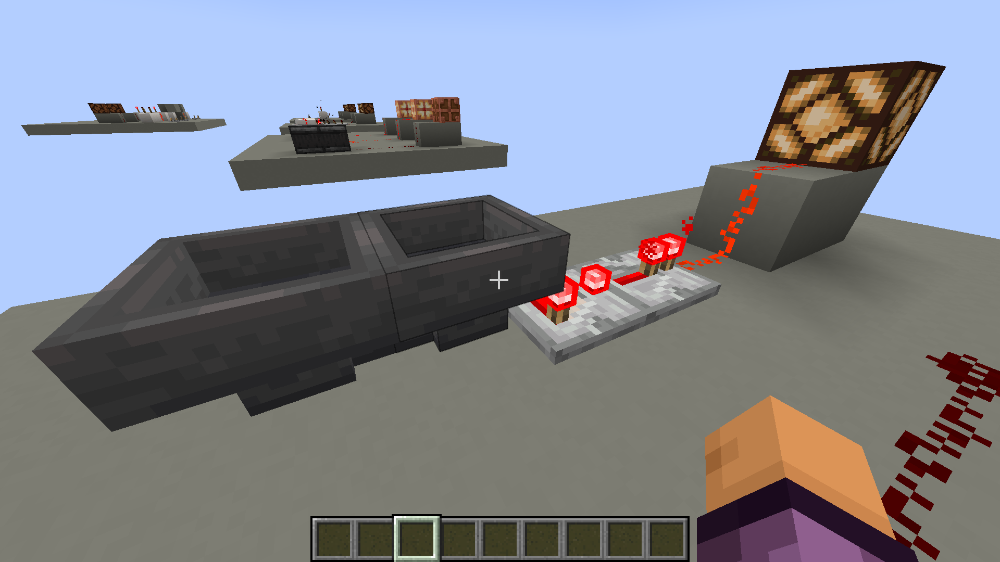
В правой воронке есть предмет (лампа горит):
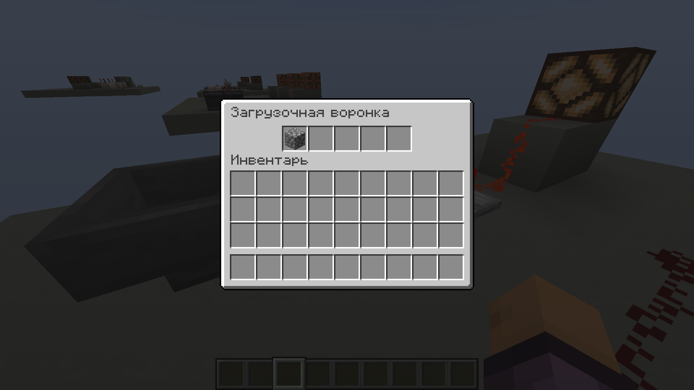
В правой воронке нет предмета (лампа не горит):
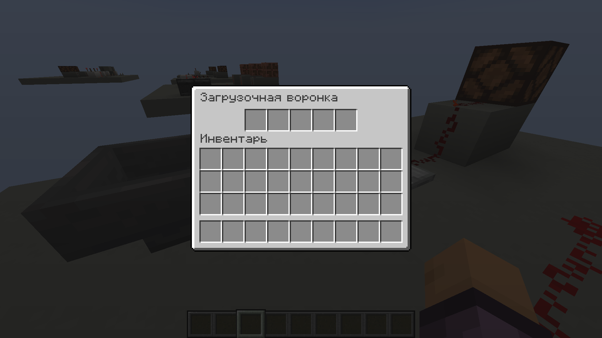
Работа "тик-так механизма" с липким поршнем
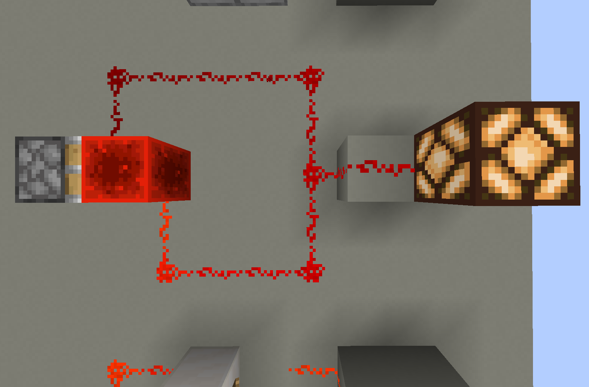
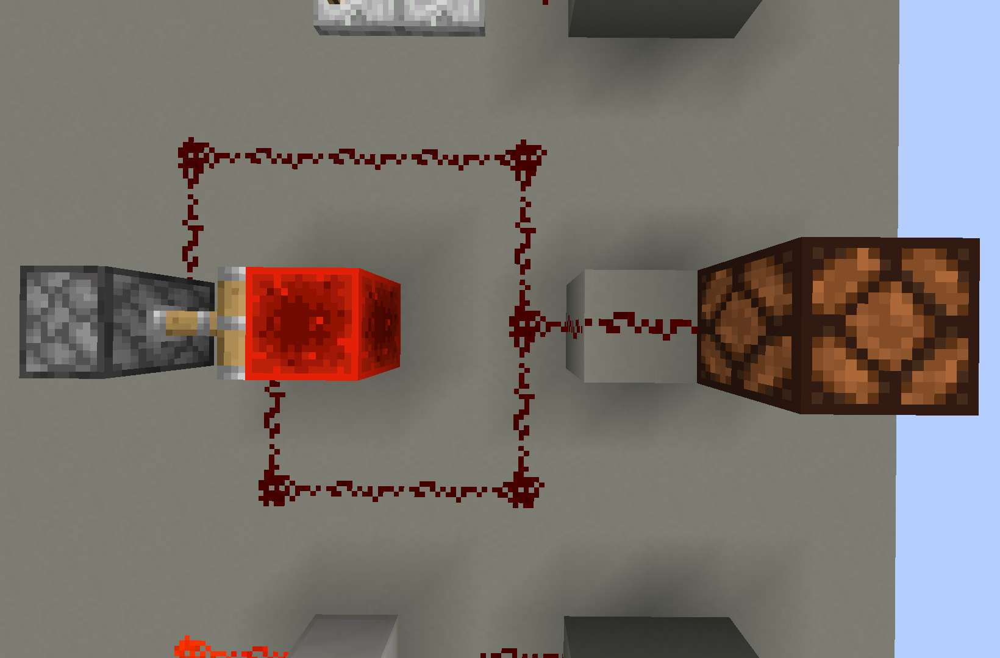
Работа "тик-так механизма" с редстоуновыми факелами
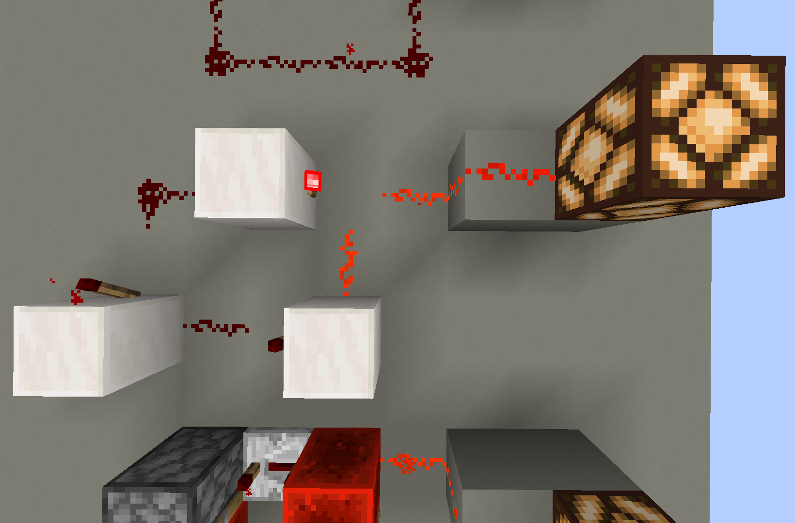
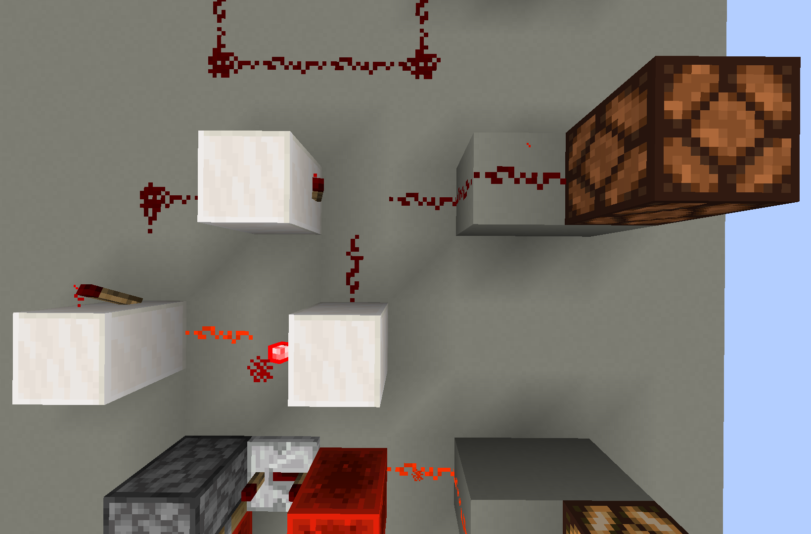
Работа "тик-так механизма" с поршнями и повторителями
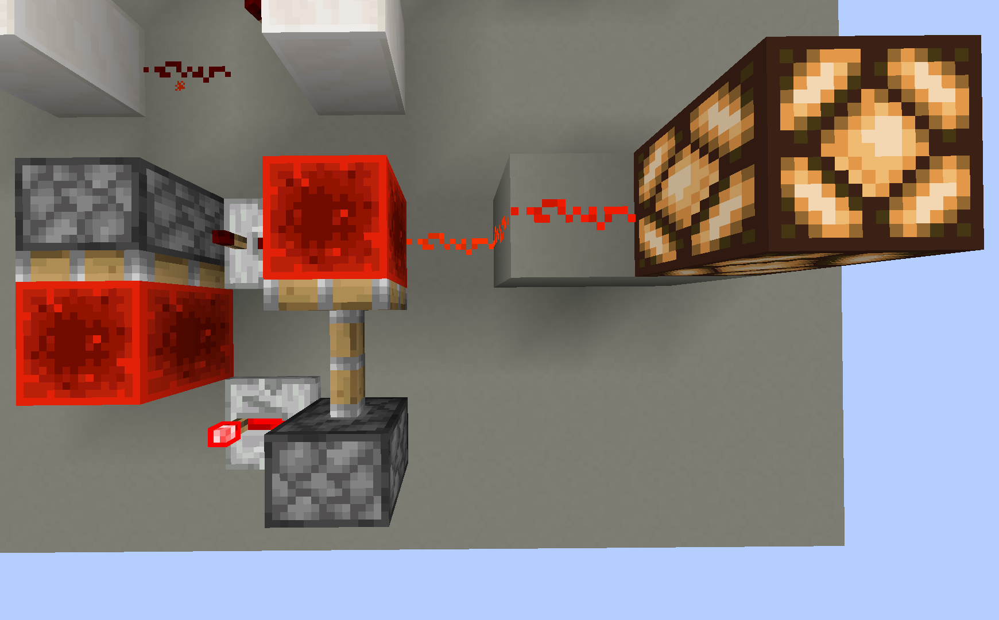
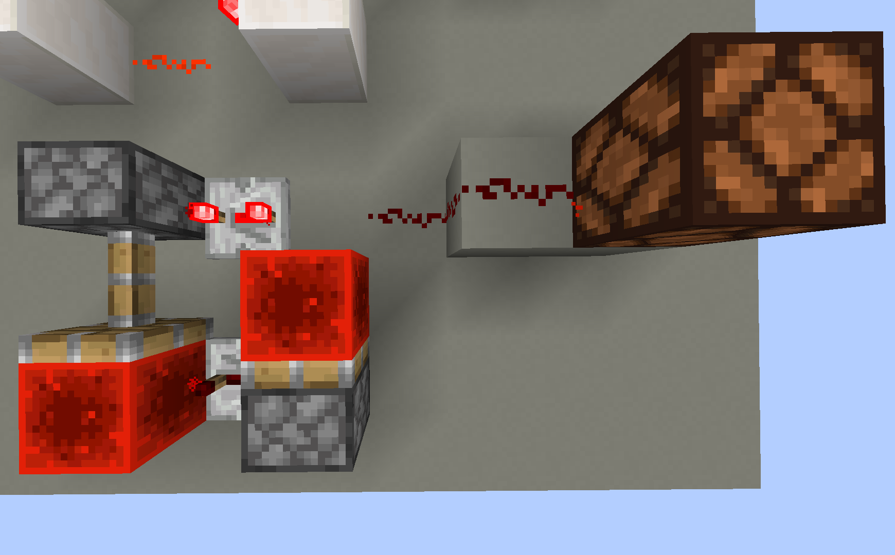